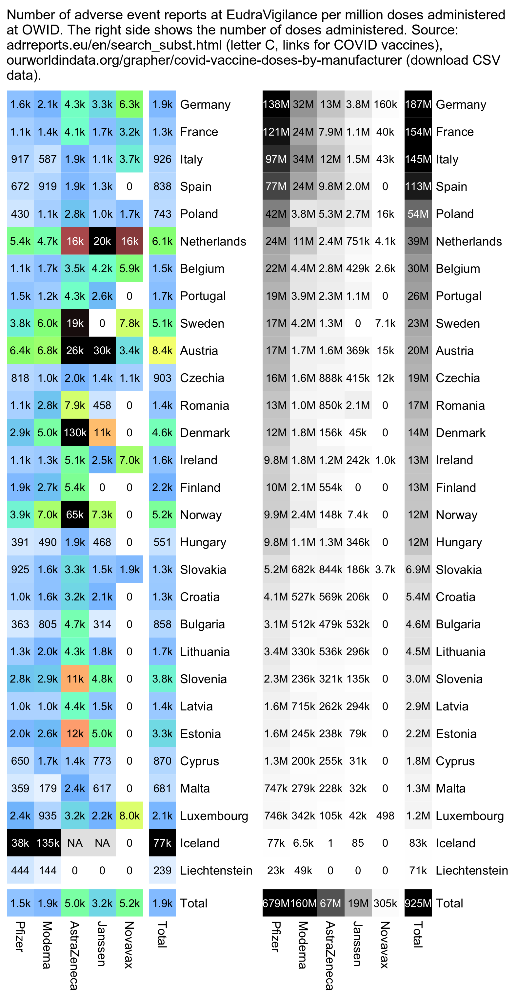

Links to earlier parts: czech.html, czech2.html, czech3.html.
The raw data for EudraVigilance that can be downloaded from howbad.info doesn't show the country of the reports. But you can see the number of reports for each country from the EMA portal for EudraVigilance, if you go here, click "C", scroll to COVID vaccines, open the page for one vaccine, and click "Number of Individual Cases by EEA countries": https://www.adrreports.eu/en/search_subst.html. I collected the data into this CSV file (as of August 8th 2024 UTC): f/eudracountry.csv. However I didn't find a way to get the number of deaths or serious reports grouped by both country and manufacturer.
I got the number of doses administered by manufacturer and country from OWID: https://raw.githubusercontent.com/owid/covid-19-data/master/public/data/vaccinations/vaccinations-by-manufacturer.csv. (The same data can also downloaded in a slightly different CSV format from here: https://ourworldindata.org/grapher/covid-vaccine-doses-by-manufacturer.)
In most countries Moderna got a higher rate of reports per doses than Pfizer, but exceptions to the pattern are Italy, Netherlands, and Portugal, and a few small countries which have a small sample size:

library(data.table)
kimi=\(x){e=floor(log10(ifelse(x==0,1,abs(x))));e2=pmax(e,0)%/%3+1;x[]=ifelse(abs(x)<1e3,round(x),paste0(sprintf(paste0("%.",ifelse(e%%3==0,1,0),"f"),x/1e3^(e2-1)),c("","k","M","B","T")[e2]));x}
owid=fread("https://raw.githubusercontent.com/owid/covid-19-data/master/public/data/vaccinations/vaccinations-by-manufacturer.csv")
owid=unique(owid[order(-date)],by="location")[,.(country=location,doses=total_vaccinations,type=vaccine)]
owid$type[owid$type=="Pfizer/BioNTech"]="Pfizer"
owid$type[owid$type=="Oxford/AstraZeneca"]="AstraZeneca"
owid$type[owid$type=="Johnson&Johnson"]="Janssen"
eu=fread("http://sars2.net/f/eudracountry.csv")
eu$country[eu$country=="Czech Republic"]="Czechia"
me=merge(eu,owid)
me[,country:=factor(country,me[,.(sum(doses)),country][order(-V1),country])]
me[,type:=factor(type,me[,.(sum(doses)),type][order(-V1),type])]
me=rbind(me,me[,.(reports=sum(reports),doses=sum(doses),country="Total"),type])
me=rbind(me,me[,.(reports=sum(reports),doses=sum(doses),type="Total"),country])
m=me[doses>0,xtabs(reports/doses*1e6~country+type)]
disp=kimi(m);exp=.7;maxcolor=2e4
hide=m>1e6;m[hide]=disp[hide]=NA
pal=hsv(c(21,21,21,16,11,6,3,0,0,0)/36,c(0,.25,rep(.5,8)),c(rep(1,8),.5,0))
pheatmap::pheatmap(m^exp,filename="i1.png",display_numbers=disp,
gaps_row=nrow(m)-1,gaps_col=ncol(m)-1,
cluster_rows=F,cluster_cols=F,legend=F,cellwidth=20,cellheight=20,fontsize=9,fontsize_number=8,
border_color=NA,na_col="gray90",
number_color=ifelse(!is.na(m)&m^exp>maxcolor^exp*.8,"white","black"),
breaks=seq(0,maxcolor^exp,,256),
colorRampPalette(pal)(256))
m=me[,xtabs(doses~country+type)]
disp=kimi(m);exp=.7;maxcolor=max(m[-nrow(m),-ncol(m)])
pal=sapply(seq(1,0,,256),\(i)rgb(i,i,i))
pheatmap::pheatmap(m^exp,filename="i2.png",display_numbers=disp,
gaps_row=nrow(m)-1,gaps_col=ncol(m)-1,
cluster_rows=F,cluster_cols=F,legend=F,cellwidth=20,cellheight=20,fontsize=9,fontsize_number=8,
border_color=NA,na_col="gray90",
number_color=ifelse(!is.na(m)&m^exp>maxcolor^exp*.45,"white","black"),
breaks=seq(0,maxcolor^exp,,256),
colorRampPalette(pal)(256))
cap="Number of adverse event reports at EudraVigilance per million doses administered at OWID. The right side shows the number of doses administered. Source: adrreports.eu/en/search_subst.html (letter C, links for COVID vaccines), ourworldindata.org/grapher/covid-vaccine-doses-by-manufacturer (download CSV data)."
system(paste0("magick \\( i1.png -gravity east -chop 10x \\) \\( i2.png -gravity west -chop 10x \\) +append 0.png;w=`identify -format %w 0.png`;pad=20;magick -pointsize 42 -interline-spacing -2 -font Arial \\( -size $[w-pad*2]x caption:'",cap,"' -splice $[pad]x20 \\) 0.png -append 1.png"))
However this analysis was not adjusted for age. In VAERS reports most EEA countries have a higher average age for Moderna than Pfizer, even though in most countries the difference isn't as big as in the Czech Republic:
va=fread("AllVAERSDataCSVS/NonDomesticVAERSDATA.csv")
va=merge(va,fread("AllVAERSDataCSVS/NonDomesticVAERSVAX.csv"))
va[,country:=substr(SPLTTYPE,1,2)]
vae=va[VAX_TYPE=="COVID19",.(age=mean(AGE_YRS,na.rm=T),.N),.(type=VAX_MANU,country)]
o=vae[type=="MODERNA",.(country,Moderna_age=age,Moderna_N=N)]
o=merge(o,vae[type=="PFIZER\\BIONTECH",.(country,Pfizer_age=age,Pfizer_N=N)])
o$diff=o[,2]-o[,4]
o=o[country%in%strsplit("AT BE BG HR CY CZ DK EE FI FR DE GR HU IE IT LV LT LU MT NL PL PT RO SK SI ES SE IS LI NO"," ")[[1]]]
o[order(-Pfizer_N)][,c(1,2,4,6,3,5)]|>mutate_if(is.double,round,1)|>print(r=F)
country Moderna_age Pfizer_age diff Moderna_N Pfizer_N
AT 46.8 46.1 0.7 7179 85854
DE 49.7 49.4 0.3 9772 54896
FR 51.3 50.2 1.2 6781 41596
IT 49.2 48.0 1.2 5161 19949
NL 51.3 47.5 3.8 1743 11278
SE 49.9 49.7 0.3 2190 9454
ES 45.3 48.0 -2.7 2232 8977
BE 42.1 42.6 -0.5 2871 8285
PT 44.6 44.9 -0.3 885 6337
NO 44.5 46.3 -1.8 1563 5934
FI 45.6 47.1 -1.5 1059 5555
GR 49.6 47.8 1.8 676 5125
CZ 54.3 48.7 5.6 441 4548
IE 47.5 42.1 5.4 794 4408
PL 47.5 44.2 3.3 500 4300
DK 47.6 51.5 -3.9 861 4250
RO 46.5 41.2 5.3 180 1978
EE 55.7 49.4 6.3 104 1143
HR 47.7 44.7 3.0 178 1118
HU 61.8 49.2 12.6 93 1064
IS 41.2 47.6 -6.4 76 1048
SK 52.8 46.1 6.8 120 857
LT 53.1 47.8 5.4 63 830
SI 62.8 50.6 12.2 58 518
LU 45.7 43.4 2.3 117 457
LV 53.0 40.8 12.2 149 417
CY 43.2 45.5 -2.3 26 214
BG 46.2 46.5 -0.3 33 185
MT 43.2 50.9 -7.7 23 137
LI 44.0 72.0 -28.0 2 5
country Moderna_age Pfizer_age diff Moderna_N Pfizer_N